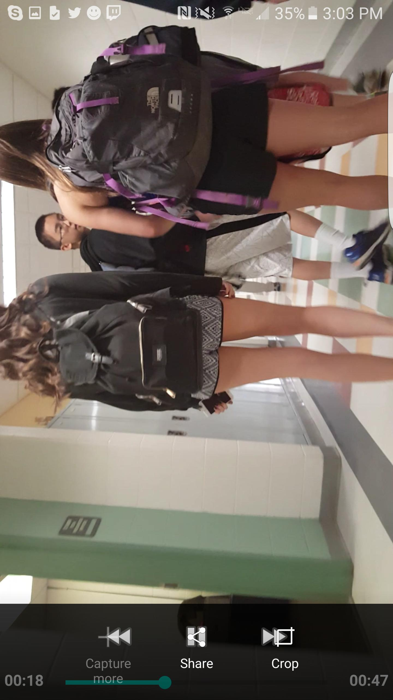

Welcome to
Ce este Yoga? | Arta de a trăi România
2021.03.26 14:35The Art of Living
Romania X English Romanian Caută un curs | Găsește un centru București Alte locații X Despre noiÎn România
Organizația Art of Living
Instructori
Fondator
Biografie
CursuriÎncepători
Ora de fericire
Ia legătura cu noi și află mai multe despre beneficiile pe care poți să le ai urmând unul din programele "Art of Living"Citește mai departe
Arta fericirii
Programul de bază "Art of Living" te ajută sa-ți decoperi puterea și libertatea interioară în mod practic prin experiență directă.Află cum
Art of Living Yoga
Cât de des ți-ai zis "Yoga nu este pentru mine"? A venit momentul să reconsideri acest gând.Citește despre programul de Yoga
Copii (8 -12 ani)
YES!
YES!+
Avansați
Arta meditației
Tehnica meditației fără efort care dă minții pace, claritate și creativitate.Citește mai multe
Arta tăcerii
Mergi dincolo de mintea agitată și experimentează un extraordinar sentiment de pace și vitalitate prin intermediul meditațiilor ghidate.Află mai multe
DSN
DSN (în engleză "Do Something Now") este un curs riguros care îi ajută pe participanți să treacă peste inhibițiile și barierele personale și să își găsească puterea și stabilitatea interioară.Pentru absolvenți
Sesiunile săptămânale de Sudarshan KryiaSesiunile săptămânale de Sudarshan Kryia
Sesiunile săptămânale de Sri Sri YogaSesiunile săptămânale de Sri Sri Yoga
O lume fără violență, un corp fără boli, o respirație fără tremur, un intelect fără inhibiții și o memorie fără traume este dreptul din naștere al oricărui individ. ~ Sri SriCursuri internaționale
Stil de viațăYoga
Introducere în Yoga
Calea Yoga
10 obiceiuri alimentare sănătoaseYoga pentru omul zilelor noastre
Super Yoga pentru super creier
Yoga la birou
Cum sa scapi de kilogramele in plus, in ritm accelerat: 5 secrete
Meditație
Ce este meditaţia?
Meditaţia & logica
Ayurveda
Ayurveda
Două surori de neseparat: Yoga și Ayurveda
Alege vegetarianismul, alege viaţa
ProiecteProiecte
Ajutor în caz de dezastru
Educație
Dezvoltare rurală
Tineri antreprenori
Program în închisori
Emanciparea femeilor
Mediu
Pace
În România
Actiune pentru copiii de la centrul Ana si Copiii
Curs de Arta Respirației
Curs de Arta Meditației
Discurs Sri Sri
ÎnţelepciuneÎntrebări și răspunsuri
Clipuri
Ce a spus Sri Sri azi
Pagini de cunoaștere
Acasă › Yoga › What is Yoga?Ce este Yoga?
Termenul ‘Yoga’ este derivat din rădăcina Sanskrită ‘yuj’, care înseamă uniune - uniunea dintre corp, minte şi spirit sau conştiinţă. Este un mod de a uni diferite aspecte a ceea ce suntem noi.
Yoga nu inseamna doar exerciţii fizice , cum este adesea interpretat greşit , ci cuprinde ceva vast ş i variat care are impact atât asupra corpului fizic dar şi asupra straturilor subtile , revigorând mintea şi sufletul . Dacă citeşti un vechi tratat de yoga - Yoga -Sutra lui Patanjali - vei şti că Yoga este un mod de viaţă . Acesta trebuie să fie îmbibat la toate nivelurile de existenţa umană pentru ca omenire să găsească atât bucurie spirituală cât şi materială.
Aşa cum apa vine în multe forme – abur, gheaţă şi lichidă şi are multiple utilizări –Yoga are multe forme şi fiecare formă are un rol particular de jucat în diferitele aspecte al vieţii: relaţii, familie, carieră, sănătate şi mediu.
Oricine poate face Yoga. Aceasta nu este tot una cu acrobatica. Yoga ne vine în mod natural.
Trei oameni orbi au venit la un elefant. Unul dintre ei a atins coada elefantului şi a zis că elefantul este ca o mătură, al doilea a atins piciorul şi a zis că elefantul este ca un copac şi al treilea a atins corpul şi a zic că este asemănător cu un cimpoi.
Oamenii vin la yoga gândind că este vorba numai de asane sau respiraţie
sau meditaţie, dar întregul este întotdeauna mai mare decât părţile.
Yoga este mult mai mult decât percepem noi că este.
Stiati că
Yoga nu inseamna numai asane şi exerciţii dar şi:
Joc şi amuzament
Detaşare
Tăcere
Iubire
Sine
Amuzament şi Joc
Când mergi după delectare, mizeria merge după tine.
Când mergi după Cunoaştere, delectarea merge după tine.
Yoga este un mod de a ajunge la amuzament şi joc în fiecare situaţie - obişnuită sau extraordinară, mergând catre seninătate şi abundenţă.
Primul pas constă în a realiza, şi odată ce eşti pe această cale yoghina, ai realizat deja şi ai devenit conştient de ceea ce este. După aceea, este doar spirală ascendentă.
Tacere
Rugaciunea dintru respiraţie este tacere.
Iubirea dintru infinitate este tăcere.
Înţelepciunea fără cuvânt este tăcere.
Compasiunea fără scop este tăcere.
Acţiunea fără actor este tăcere.
A zâmbi împreună cu toată Existenţa este tăcere!
Detaşare
Detaşarea nu este apatie. Detaşarea nu îţi ia bucuria de la tine. Detaşarea aduce a cea bucurie pe care nimic altceva nu ţi+o poate da. Detaşarea nu te divide, ci te conectează. Te conectează la momentul prezent atât de total, şa încat poţi fi 100 de procente in anything you dîn orice faci.
Practica of yoga aduce înţelepciune şi cunoaştere, care în schim conduc la detaşare. O înţelegere mai largă a naturii trecătoare a lucrurilor aduce o stare de non-ataşament faţă de toate evenimentele, obiectele, oamenii sau situaţiile, care te îţi permit să ramâi calm şi neperturbat în orice situaţie.
Iubire
Iubirea este natura ta .
în procesul exprimării ei, de multe ori rămâi înţepenit în obiect. Aceasta se întâmplă atunci când privirea ta este prinsă în lumea exterioară. Pentru a te întoarce la natura ta, ai nevoie de înauntru.
Durerea este prima introspecţie.
Aceasta te îndepărtează de obiect şi te întoarce către corpul şi mintea ta.
Energia este a doua introspecţie.
Un fulger de energie te aduce înapoi la Sinele tău.
Iubirea Divină este a treia introspecţie.
O străfulgerare de Iubire Divină te face atât de complet şi şi anuleză toate plăcerile relative.
Extazul este a patra introspecţie.
Extazul este o ridicare a conştiinţei şi o conştientizare parţială a realităţii fizice din jur. Existenţa non-duală - totul este făcut din unul şi numai unul, aceasta este a cincea introspecţie.
Când iubirea străluceşte, ea este fericire.
Când curge, este compasiune. Un amestec din toate acestea este yoga.
Sinele
Sentimentele se schimbă, gândurile se schimbă, ideile se schimbă, corpul este supus schimbării tot timpul. Dar setea din adâncul nostru este pentru ceva care nu se schimbă, care este etern, care este întotdeauna, care este Sinele. Sinele nu este numai complexul minte-corp. Nici corpul şi nici mintea nu sunt Sinele. Singurul scop pentru care există acest corp este să te facă conştient de cât de frumos eşti şi să te facă conştient că este posibil să trăieşti toate valorile pe care le preţuieşti şi să creezi o lume a divinităţii în jurul tău.
Yoga îţi dă acele lentile cu care poţi vedea lumea din interior spre exterior în loc de a o vedea invers.
Sign In Politica de confidențialitate Cookie Policy Termenii de utilizare We use cookies to provide you with the best experience possible. By using our website, you agree to the use of cookies as described in our Cookie Policy . OK
